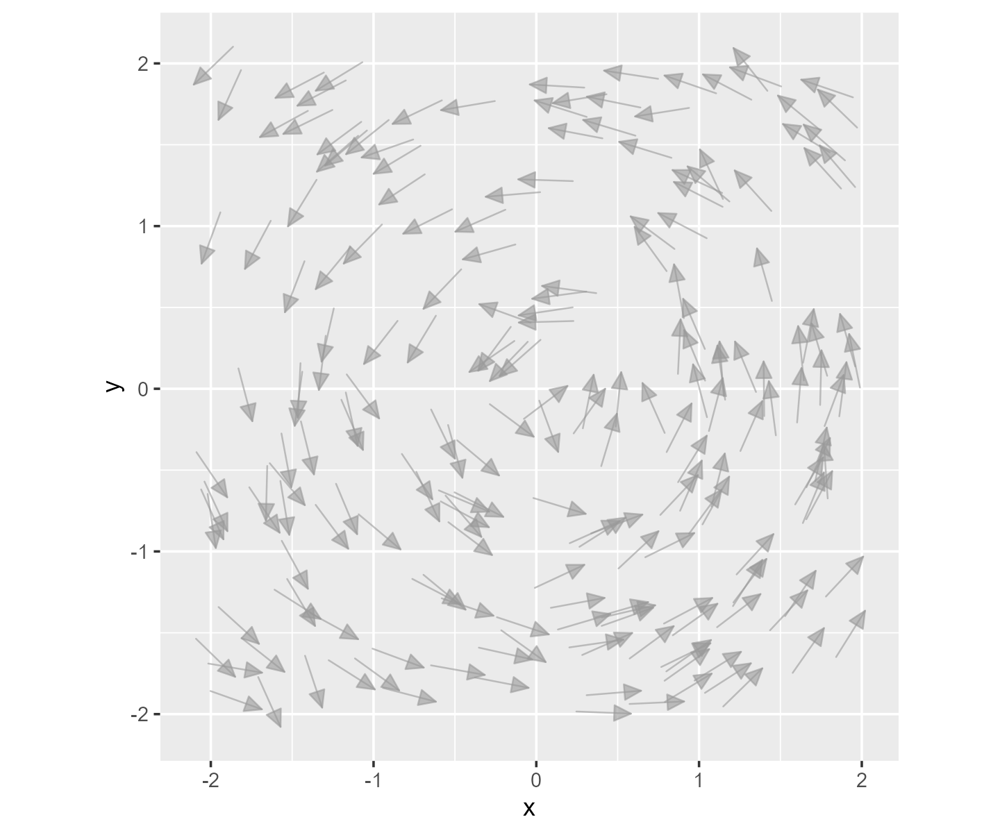
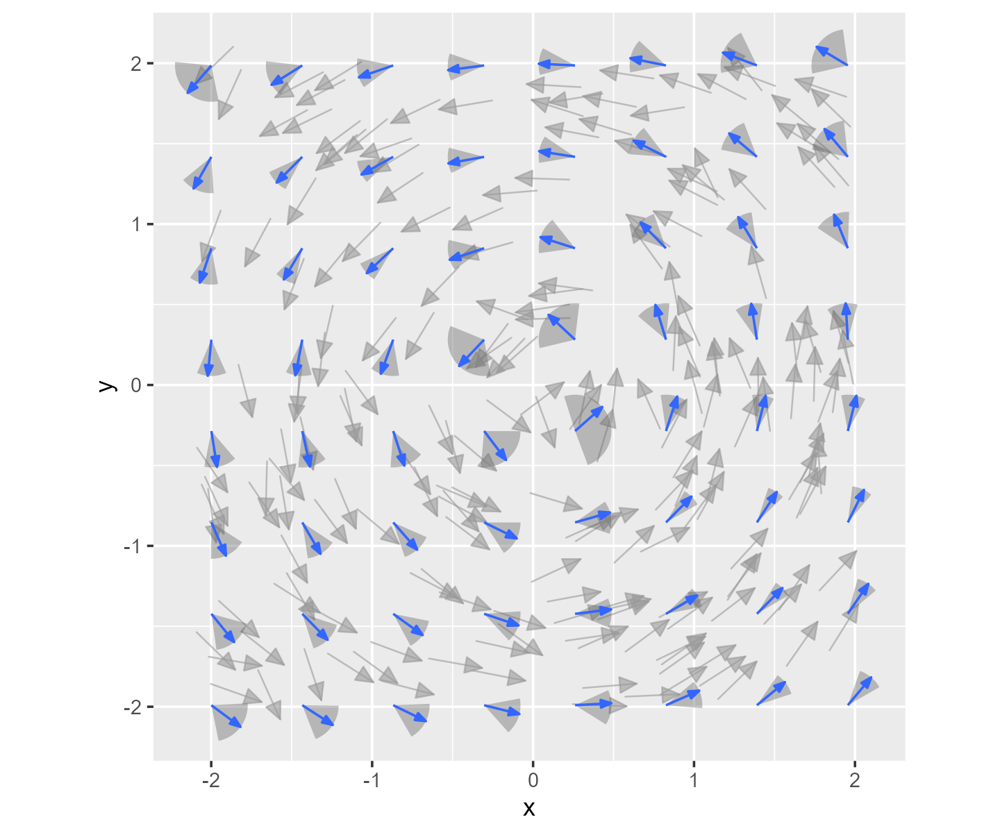
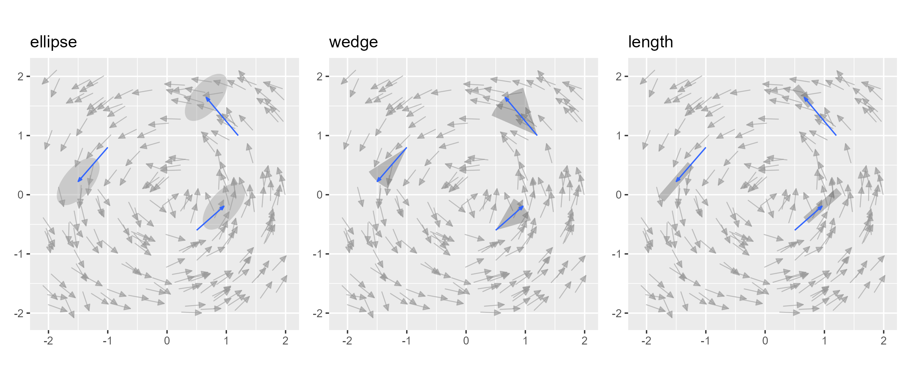
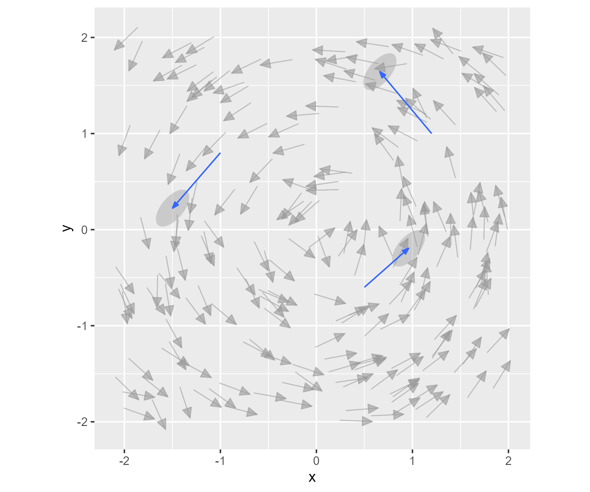
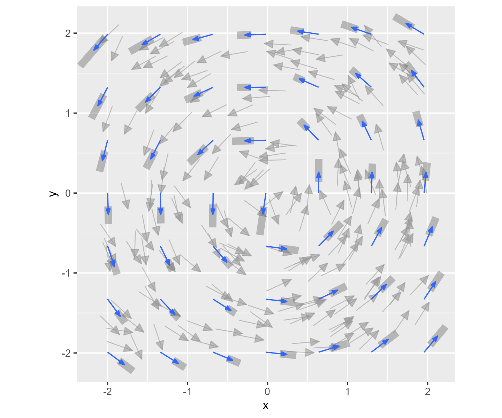
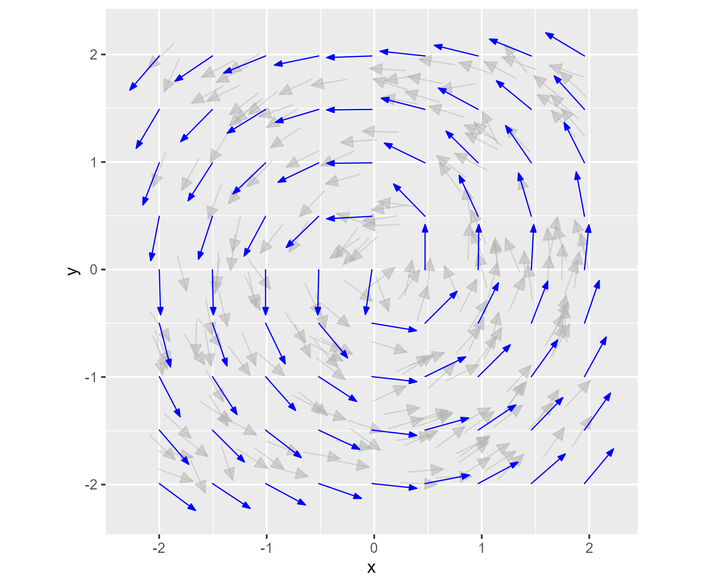
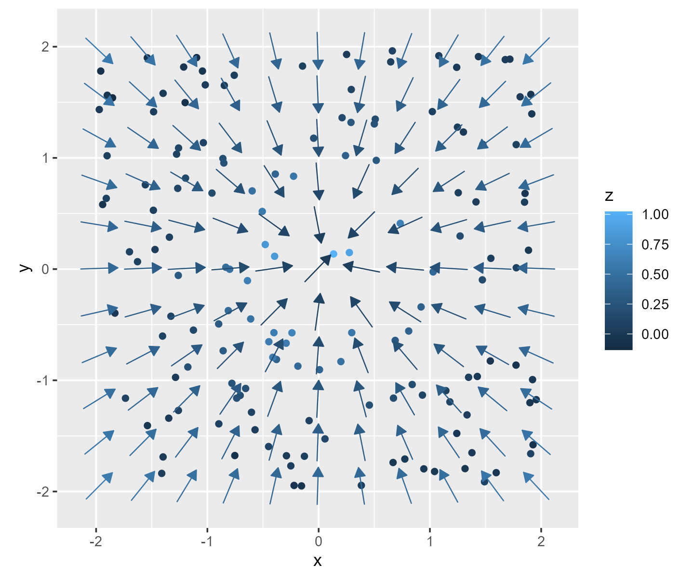

Measured vectors are noisy and scattered.
geom_vector_smooth() fits a model to them, predicts the
vector anywhere in the plot, and shows how uncertain each prediction is.
geom_stream_smooth() turns the fitted field into
streams.
Example data
The data below are noisy measurements of a known field, a rotation that weakens away from the center, at 200 random places. The noise in the two components is correlated.
set.seed(42)
truth <- function(u) c(-u[2], u[1]) * exp(-sum(u^2) / 4)
n <- 200
obs <- data.frame(x = runif(n, -2, 2), y = runif(n, -2, 2))
e1 <- rnorm(n); e2 <- rnorm(n)
obs$fx <- apply(obs, 1, function(u) truth(u)[1]) + 0.15 * e1
obs$fy <- apply(obs[c("x", "y")], 1, function(u) truth(u)[2]) +
0.15 * (0.6 * e1 + 0.8 * e2)
base <- ggplot(obs, aes(x, y, fx = fx, fy = fy)) +
geom_vector(color = "grey60", alpha = 0.6) +
coord_equal()
base
The smoothed field
On its own, geom_vector_smooth() predicts on a grid over
the data and draws each prediction with a wedge, explained below.
base + geom_vector_smooth(n = 8)
Three methods
-
method = "gam"(the default) fitsfxandfytogether with a smooth surface inxandy(a generalized additive model from mgcv), and estimates how their errors are correlated. -
method = "lm"fits the multivariate linear model given byformula(by defaultcbind(fx, fy) ~ x * y). -
method = "kriging"treats the components as correlated spatial processes (cokriging with gstat).
Prediction intervals
At any point, a model predicts a vector and the covariance of where a
new measurement’s tip could land. That covariance includes both the
uncertainty of the fitted field and the noise of a single measurement,
so the intervals cover a new observation, not only the fitted
mean. From it you can ask three questions, chosen with
pi_type:
pi_type |
Question | Shape |
|---|---|---|
"ellipse" |
Where could the whole tip land? | an ellipse around the tip |
"wedge" |
Which directions are plausible? | a sector from the base |
"length" |
Which lengths are plausible? | a band along the vector |
The ellipse is a joint region for the tip, direction and length together. The wedge and the length band are each an interval for one coordinate, from the exact distribution of that coordinate.
pts <- data.frame(x = c(-1, 0.5, 1.2), y = c(0.8, -0.6, 1))
show <- function(type) {
base +
geom_vector_smooth(eval_points = pts, pi_type = type) +
ggtitle(type)
}
if (requireNamespace("patchwork", quietly = TRUE)) {
library(patchwork)
show("ellipse") + show("wedge") + show("length") &
theme(axis.title = element_blank())
} else {
show("ellipse")
}
Notice how the ellipses tilt: the gam has learned that the errors in
fx and fy are correlated.
conf_level sets the level of the interval (0.95 by
default), and se = FALSE turns the intervals off.
base + geom_vector_smooth(eval_points = pts, pi_type = "ellipse", conf_level = 0.5)
Why one at a time?
A wedge and a length band can’t be combined into one 95% region. Each covers its own coordinate 95% of the time, but a new tip must satisfy both to land in their overlap, which happens less often: anywhere from 90% to 95%. The ellipse is the region for the tip as a whole.
On a grid
With eval_points = NULL the predictions are on a grid,
and the vectors are drawn at a common length so they don’t overlap.
Wedges are the default there. Length bands are scaled with their
vectors, so they show each vector’s length uncertainty relative to its
own size; a band is cut off at twice its vector’s drawn length.
base + geom_vector_smooth(n = 7, pi_type = "length")
Streams from data
geom_stream_smooth() fits the same models and draws
streams through the fitted field.
ggplot(obs, aes(x, y, fx = fx, fy = fy)) +
geom_vector(color = "grey70", alpha = 0.5) +
geom_stream_smooth(n = 9) +
coord_equal()
Smoothing a surface: geom_gradient_smooth()
When the data are heights z of a surface rather than
vectors, geom_gradient_smooth() fits the surface with
formula and draws its gradient.
set.seed(2)
hill <- data.frame(x = runif(150, -2, 2), y = runif(150, -2, 2))
hill$z <- exp(-(hill$x^2 + hill$y^2)) + rnorm(150, 0, 0.05)
ggplot(hill, aes(x, y, z = z)) +
geom_point(aes(color = z)) +
geom_gradient_smooth(formula = z ~ poly(x, 2) + poly(y, 2)) +
coord_equal()